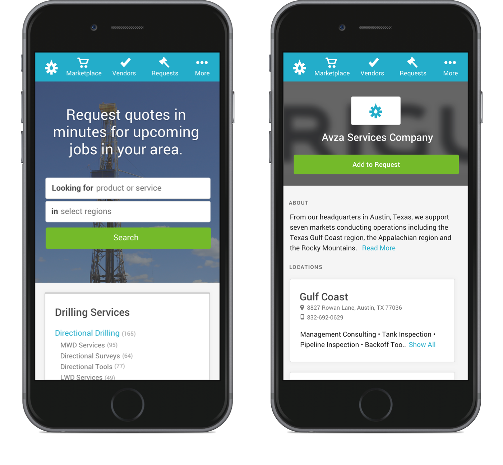
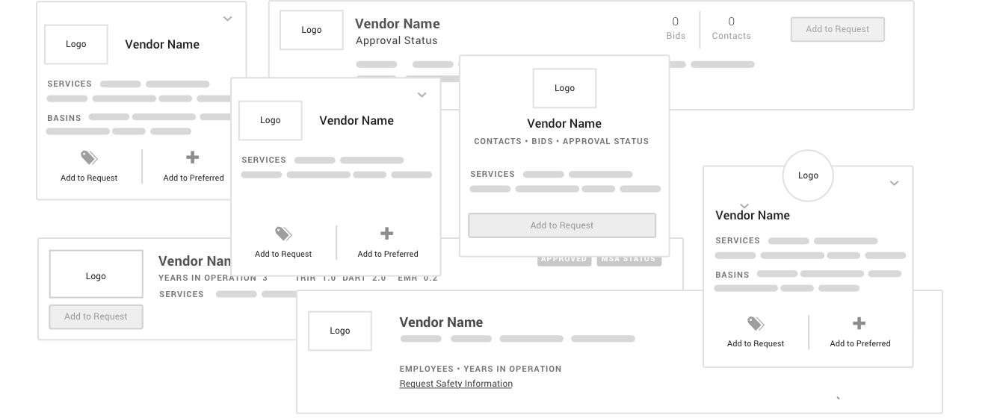
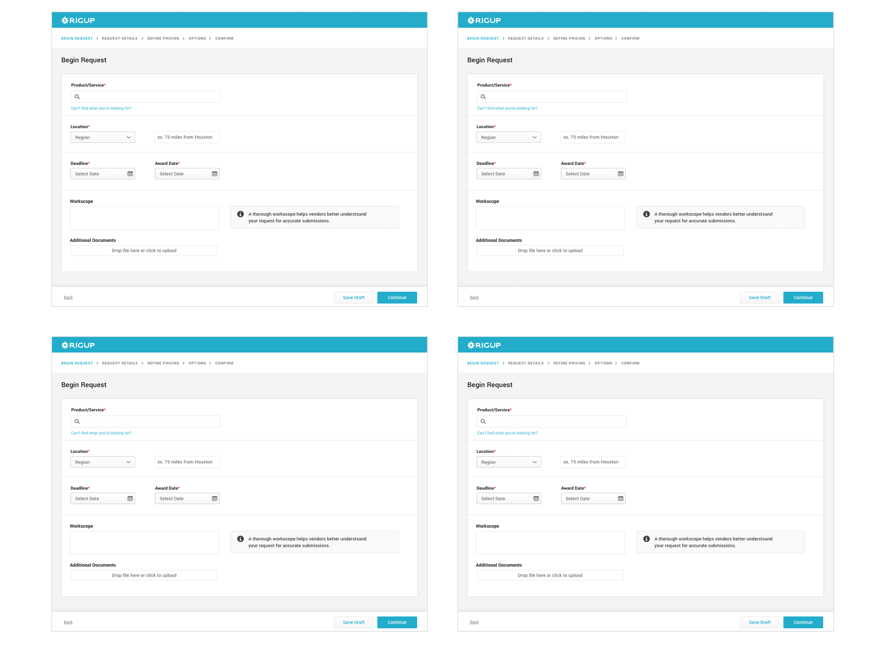
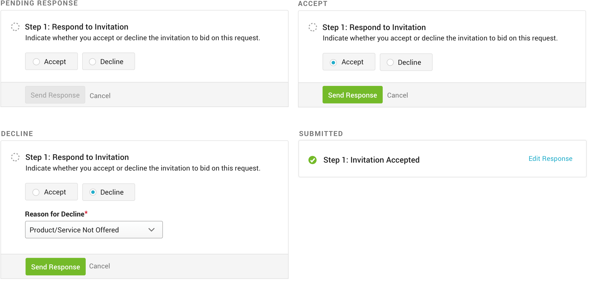

One of the first problems I tackled at RigUp was how we could improve the bidding process. This is where buyers reach out to multiple vendors, request a quote for an upcoming job, and select who wins the work.
To begin the bidding process, buyers select who they want to request a quote from. Finding vendors to bid out to is difficult as many vendors are mom and pop shops without a web presence. RigUp makes it easy for buyers to find vendors by their products and services, as well as location.
I went through a lot of iterations on how to display vendor information in the Marketplace, and we continue to iterate it often. As we grow the product, figuring out how to capture the data is key before figuring out how to display it in the UI - meaning creating a design that can scale.
The process for creating a request rapidly evolved from manual emails → a humble modal → a multi-step wizard flow. It was important that we knew what data we needed to capture and how to chunk the information, before building a robust creation process.
Here's step one of the process:
We also made submitting bids easier for vendors. Many vendors are out in the field away from their computers, so designing a mobile-first experience for them was crucial. Mobile usage is double the amount for vendor users compared to buyer users (32% vs 16%).
Here are some different validation steps for responding to the invitation to bid.
After the request is sent, the user waits for the pricing submissions to roll in. Historically, the bidding process is scattered across phone calls, emails, and faxes. With RigUp, centralizing pricing and communication in one place ensures that confidential documents would not be lost in the shuffle.
During a sales demo of our product (user feedback comes from everywhere!), we learned that the design didn't scale well with large requests. The card UI for pricing made it difficult to flip through submissions.
Here's the latest iteration we've implemented: